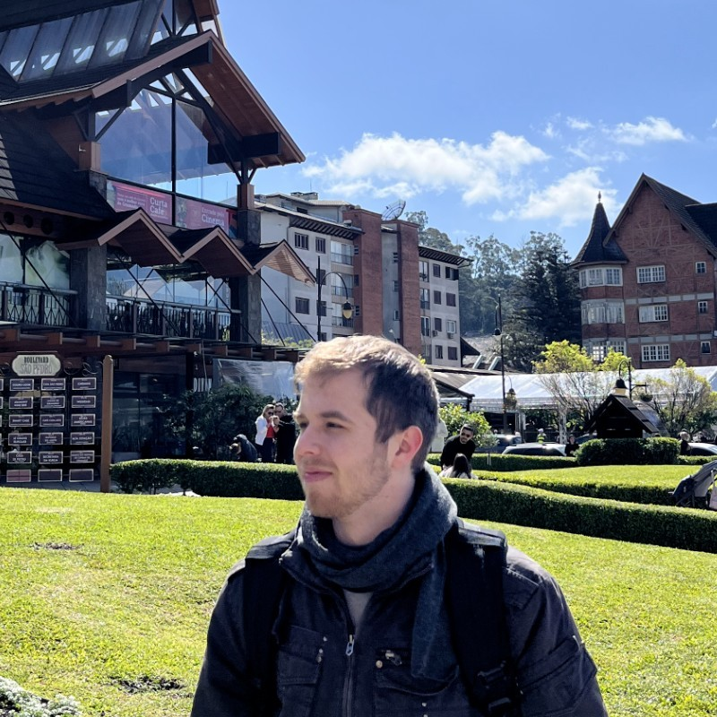

Hi😁! Welcome to my portfolio of coding projects💻.
I am Pedro, a Brazilian student pursuing a Materials Engineering degree at UFRGS (Federal University of Rio Grande do Sul) since 2018 and expecting to graduate by the end of 2024.
You may be wondering how I got into coding while studying Materials Engineering, which is mostly related to Chemistry. Actually, it's quite simple:
At some point during my degree (I really don't remember exactly when), I took a class that introduced me to the C language.
While my classmates hated it, I very much enjoyed it, and that's when I realized that programming is all about challenges🎯 and logic🧐.
Since then, I've been studying programming and focusing more on related topics.
I was a student at Oracle Next Education (ONE) program, from Oracle, where I learned programming languages such as
Java Object-Oriented and Spring Framework, data related topics such as SQL,
as well as improved my personal skills.
As part of ONE I have also been challenged to create programs based on initial ideas and proposals.
In addition, I am studying and working Python especially in Data Science
As part of my degree program, I also did an internship at the "Instituto SENAI de Inovação (ISI) em Engenharia de Polímeros",
which was focused on developing innovative💡 projects to meet industry demands.
This institute is inspired on the German Fraunhofer Institute.
Today I am an intern at Braskem company, where I work with Data Science, Labs Digitalization and Innovation applied to polymeric materials,
and because of that I am able to continuosly improve my coding, Data Science skills and enrich my graduation. In this internship experience, all projects
I worked until today required data treat and exploration, which was done mainly with Python, Pandas and Numpy, also some projects required others
technologies such as Image Featurization with OpenCV, PIL and scikit-image, Machine Learning with scikit-learn, signal exploration manipulation
with scipy, RPA (automation) with TKinter and Pyautogui, Data Visualization with matplotlib, plotly and seaborn
as well as other technologies, like dataiku, databricks and DevOps.
I'm always learning new things, using creativity🤯 to solve problems and thirsty for innovation. I believe that under certain point of view
everthing can be interesting🤩.
All of my projects, including personal projects and ONE challenge projects, will be listed on this portfolio.
Here, you can find some basic information about them.
However, if you are interested in more detailed information, you can always read the README file on the GitHub project page or ask me.
If you got interested in contacting me for any reason, you can find my LinkedIn and GitHub profiles at the bottom of this page,
and also fell free to contact me via my email:
pedrotmartin00@hotmail.com
30/06/2024
about me
